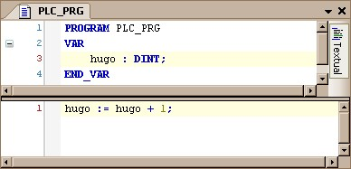
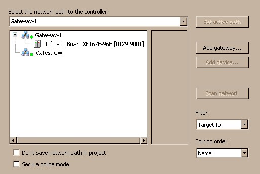
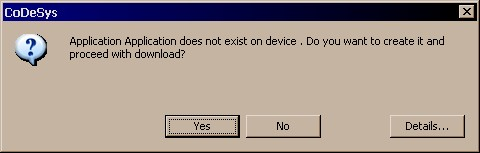
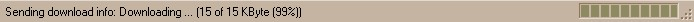

Testing the communication¶
- To test the communication basically, you should start with a very simple project with a cyclic counter:
- Double click on the device in your device tree, and open the communication settings:
- Set the “active path” to your PLC and try to log in. You should see the following dialog box:Note: If that dialog box doesn’t appear, you will most likely have an issue in SysTimeMyPlat.c: SysTimeGetMs(). Because this function is used to detect communication timeouts and if the timebase is wrong, this leads to such communication errors.
- If you say “Yes” in the previous dialog, you should see a progress bar in the status bar:
- If everything worked fine, your project should now be successfully downloaded and your program should be in stop:
If it didn’ work:
- You get an error message “Create Bootproject failed”:Try to logout and login again. If this works, you just have a problem with your flash driver. The PLC was unable to save the bootproject, but the application should run fine anyway.
- You get an error message “Communication Timeout”:Most likely your PLC crashed during download. You should attach your debugger, try again and have a look into section 2.3.